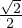
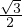
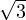

> 0 ⇔ ab > 0, kui a ja b on samamärgilised
> 0 ⇔ ab > 0, kui a ja b on samamärgilised
 < 0 ⇔ ab < 0, kui a ja b on erimärgilised
< 0 ⇔ ab < 0, kui a ja b on erimärgilisedVõrratuseks nimetatakse kahte avaldist, mis on ühendatud märgiga <,>,≤või ≥. Võrratused, mis sisaldavad märki < või > on ranged võrratused ja võrratused, mis sisaldavad märki ≤ või ≥ on mitteranged võrratused.
Võrratuse lahenditeks nimetatakse muutuja neid väärtusi, mille asendamisel
võrratusse saadakse tõene võrratus.
Võrratuse ja võrratusesüsteemi lahendihulgaks nimetatakse tundmatu või
tundmatute väärtusi, mille korral võrratus või võrratusesüsteem on tõene. Teisiti
öeldes on võrratusesüsteemi lahendihulgaks süsteemi üksikute võrrandite
lahendihulkade ühisosa.
Ühe muutujaga lineaarvõrratuseks nimetatakse võrratust kujul ax + b > 0,
ax + b < 0, ax + b ≤ 0 või ax + b ≥ 0. Võrratusi kujul ax < b, ax > bax ≥ b, ax ≤ b
saab viia eelnevalt kirjeldatud kujule, kui võrratuse mõlemale poolt liita või
mõlemalt poolt lahutada b. Kui võrratus sisaldab tundmatut, siis saab rääkida
võrratuse lahendamisest. Lineaarvõrratuseks nimetatakse võrratust, kui see sisaldab
lineaaravaldist.
Ruutvõrratuseks nimetatakse võrratust, mis sisaldab ruutpolünoomi (tundmatut
astmega kaks). Ühe muutujaga ruutvõrratus esitub kujul ax2 + bx + c > 0, kus a≠0.
Ruutvõrratuse lahendamiseks:
Murdvõrratuseks nimetatakse võrratust, mis sisaldab tundmatut murru nimetajas ehk ratsionaalavaldist. Murdvõrratuse lahendamisel kasutame omadusi:
> 0 ⇔ ab > 0, kui a ja b on samamärgilised
< 0 ⇔ ab < 0, kui a ja b on erimärgilisedVõrratusesüsteem saadakse, kui on mitu ühte ja sama tundmatut sisaldavat võrratust,
mis peavad olema üheaegselt tõesed.
Võrratusesüsteemi lahendihulgaks on süsteemi üksikute võrrandite
lahendihulkade ühisosa.
Võrratuse lahendamiseks kasutatakse teisendusi:
Ruutvõrratuse lahendamiseks:
Kõrgema astme võrratuste lahendamiseks kasutatakse intervallmeetodit. Võrratuse
a(x - a1)(x - a2)…(x - an) > 0, kus a>0 lahendamiseks joonistatakse kõigepealt
arvtelg ja tähistatakse vastava funktsiooni nullkohad. Sellega jaotatakse
arvtelg intervallideks, kus funktsioon säilitab oma märgi + või -. Nullkohad
ühendatatakse joonega alustades parempoolsest ülemisest arvtelje osast,
kusjuures joon lõikab nullkohas x-telge, kui nullkoht on paarituarvulise kordusega
ja põrkab tagasi ehk ainult puudutab x-telge, kui tegu on paarisarvulise
kordusega.
Näiteks:
x4(x- 3)3(x- 1)2(x- 5) < 0 korral on paarisarvulise kordajaga nullkohtadeks 0;1 ja
paarituarvulise kordajaga nullkohtadeks 3,5 .
Täisnurkses kolmnurgas on defineeritud teravnurga siinus.
Teravnurga α siinuseks nimetatakse tema vastaskaateti ja hüpotenuusi
suhet:
sin α = , kus a on vastaskaatet ja c on hüpotenuus.

Siinuse väärtused:
| α | 0∘ | 30∘ | 45∘ | 60∘ | 90∘ |
| sinα | 0 |  |  |  | 1 |
Täisnurkses kolmnurgas on defineeritud teravnurga koosinus.
Teravnurga α koosinuseks nimetatakse tema lähiskaateti ja hüpotenuusi
suhet:
cos α =  , kus b on lähiskaatet ja c on hüpotenuus.
, kus b on lähiskaatet ja c on hüpotenuus.
Koosinuse väärtused:
| α | 0∘ | 30∘ | 45∘ | 60∘ | 90∘ |
| cosα | 1 |  |  |  | 0 |
Täisnurkses kolmnurgas on defineeritud teravnurga tangens.
Teravnurga α tangensiks nimetatakse tema vastaskaateti ja lähiskaateti
suhet:
tan α =  , kus a on vastaskaatet ja b on lähiskaatet.
, kus a on vastaskaatet ja b on lähiskaatet.
Tangensi väärtused:
| α | 0∘ | 30∘ | 45∘ | 60∘ | 90∘ |
| tanα | 0 |  | 1 |  | - |
Täisnurkses kolmnurgas on kahe ülejäänud nurga summa 90 kraadi ehk α + β = 90∘.
Neid nurki nimetatakse teineteise täiendusnurkadeks.
Täiendusnurkade valemid: